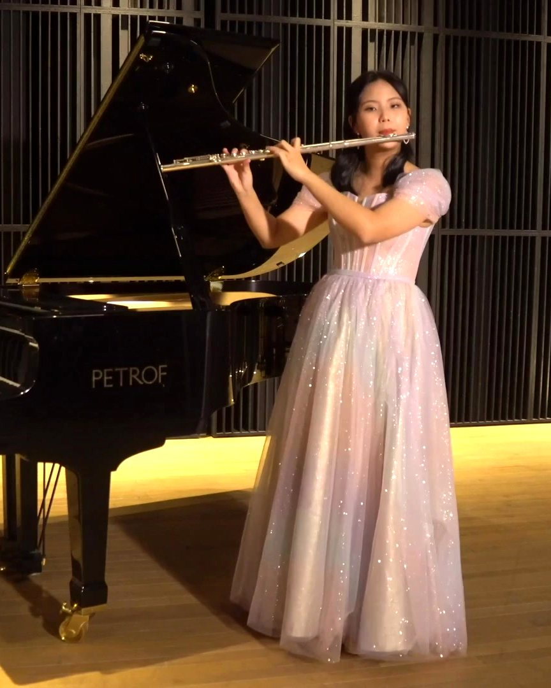

on stage
Harmonics
I sing opera and play harp, flute, guitar and piano. Below are three recorded performances: two vocal pieces with piano, and a piece where I play both flute and piano.

A plucked string, like the ones on a harp or guitar.
Performances
Recordings
Instruments
Five lines, five instruments
- Harp
- Operatic voice
- Flute
- Guitar
- Piano